Avant de commencer
Fondamental :
Réflexion collective sur l’accessibilité de l’ESR pour les personnes en situation de handicap.
Définition du handicap et catégories existantes.
(Atelier) Analyse des activités des métiers de la recherche en petits groupes :
Identification de difficultés et de limitations ;
Mesures d’accessibilité et/ou de compensation.
(Mise en commun) Alternance entre réflexions des groupes et zooms sur des handicaps peu ou mal connus.
Nous ne sommes pas des professionnels du handicap ! Il peut y avoir des imprécisions et des erreurs (mais on espère que non).
Les situations et les handicaps évoqués ne sont pas exhaustifs.
Les diapositives sont volontairement denses et accessibles.
N’hésitez pas à prendre la parole pour réagir ou poser des questions en levant la main. Tout interruption doit être faite dans la bienveillance, avec l’objectif d’apporter quelque chose.
La discussion thématique dure 2h00.
Qu’est-ce que le handicap ?
Définition
La Loi du 11 février 2005 définit juridiquement le handicap.
Il est systématiquement associé à une déficience médicale.
Une situation de handicap naît pour une personne lorsqu’elle rencontre des limites dans ses activités ou des difficultés pour participer à la vie en société à cause d’un environnement inadapté à une déficience.
Les termes handicap et déficience sont parfois confondus (par exemple : RQTH).
Quelques chiffres
Environ 12 millions de personnes sont en situation de handicap en France en 2021, soit environ 20% de la population.
Le handicap survient après l’âge de 16 ans dans 85% des cas.
1 personne sur 2 sera en situation de handicap (temporaire ou durable) au cours de sa vie.
80% des handicaps sont invisibles.
Jeu des 7 familles
Savez-vous à quelles catégories de handicaps correspondent les 7 pictogrammes suivants ?
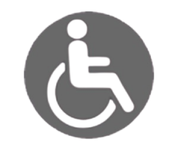
Zoom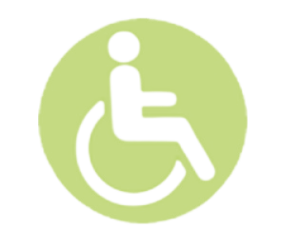
Zoom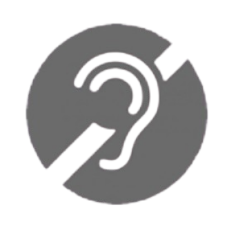
Zoom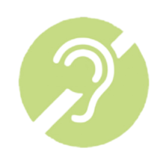
Zoom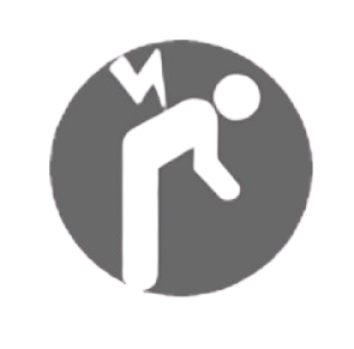
Zoom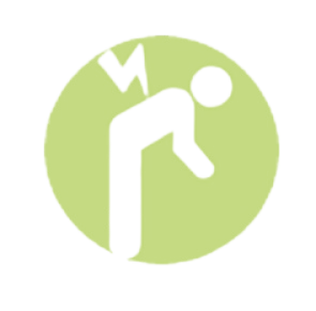
Zoom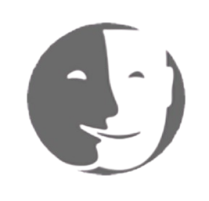
Zoom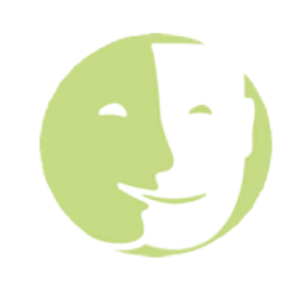
Zoom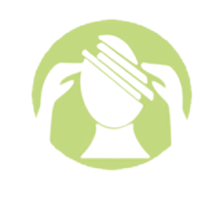
Zoom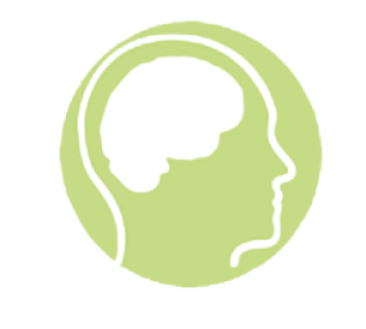
ZoomAtelier
Discussion
Analyse des activités des métiers de la recherche en petits groupes :
Identification de difficultés et de limitations ;
Mesures d’accessibilité et/ou de compensation.
Par exemple : réflexion sur la production et la diffusion des connaissances scientifiques (production d’articles scientifiques, diffusion des travaux de recherche, temporalité, etc).
Production et diffusion des connaissances scientifiques
Réflexion et discussion
Situations où des difficultés peuvent apparaître
Écriture et lecture de contenus scientifiques (articles de recherches, supports de présentation orale, logiciels de rédaction, etc) ;
Communication orale (discussions scientifiques, exposer des travaux de recherche, assister à un séminaire d’équipe, etc) ;
Terrain où les recherches sont réalisées ;
Temporalité et ce qui l’accompagne (pression à la publication, à la diffusion, deadlines, charge mentale, etc).
Mesures d’accessibilité et de compensation possibles
Communiquer sur ses besoins par rapport au handicap, et réfléchir aux compensations à mettre en place (poste de travail, rythme, terrain de recherche, etc) ;
Utiliser des logiciels spécifiques pour lire ou écrire des documents ;
Utiliser des supports de présentation accessibles (Boîte à outils d’Atypie-Friendly) ;
Donner les mêmes informations à l’oral et à l’écrit pendant les exposés ;
Adapter le rythme des travaux de recherche par rapport aux deadlines ;
Meilleure prise en compte de la fatigue ;
Faire preuve de bienveillance sur les différences de rythme de travail, de production scientifique et de communication scientifique.
Zoom sur...
Les Troubles du Neurodéveloppement (ou Troubles cognitifs)
Les TND sont caractérisés par des perturbations d’une ou plusieurs fonctions cognitives. Ils entraînent des difficultés dans au moins l’un des domaines de développement (motricité, communication, socialisation, attention, mémoire, raisonnement, etc).
Les TND apparaissent lors de la grossesse et/ou lors des premières années de vie.
Les TND regroupent, de manière non exhaustive :
| 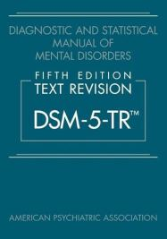 |
Le Trouble du Spectre de l’Autisme
Le TSA est caractérisé par 5 critères diagnostiques, dont 2 sont des critères symptomatiques (on parle de dyade autistique).
Critère A : Déficits persistants de la communication et des interactions sociales (3 sous-critères).
Critère B : Caractère restreint et répétitif des comportements, des intérêts ou des activités (4 sous-critères).
La notion de « Spectre » consacre la diversité dans l’autisme.
Environ 2% de la population a un TSA.
À vous de jouer !
Identifier en 4 petits groupes pendant 15 minutes des difficultés rencontrées et des mesures d’accessibilité ou de compensation à mettre en place pour les surmonter dans les aspects suivants :
Enseignement -> double point de vue enseignant/élève : préparation des enseignements, des supports de cours, relation avec les élèves, surveillance et correction des examens écrits et oraux, donner ses cours, etc ;
Déplacements et organisation de conférences : organisation, voyage, lieu de vie et de travail, interactions avec les participants, exposés, etc ;
Recrutements et carrières : procédures de recrutements contractuels ou permanents, politiques de mobilité, progression de carrière, etc ;
Vie du laboratoire : administratif, réunions, événements conviviaux, activités extérieures au laboratoire, relations entre services, management, etc.
Mise en commun
Enseignement
Réflexion et discussion
Situations où des difficultés peuvent apparaître
Communication écrite (écriture au tableau ou prise de notes, rédaction des supports, relecture de documents, correction des examens, etc) ;
Communication orale (échanges avec les élèves et les enseignants, participation à un jury, soutenance de rapport) ;
Déplacement sur le lieu du cours et pendant le cours (idem pour surveillance d’examens) ;
Manifestations de certains handicaps pendant l’enseignement (exemple : inattention, tics, troubles anxieux, troubles dépressifs, etc).
Mesures d’accessibilité et de compensation possibles
Communiquer sur ses besoins par rapport au handicap, et réfléchir aux compensations à mettre en place (locaux accessibles, logiciels spécifiques, aide humaine, etc) ;
Tenir compte de la fatigabilité et du temps effectif des enseignements ;
Envisager de communiquer sur les manifestations de son handicap aux élèves (ex : SGT) ;
Donner les mêmes informations à l’oral et à l’écrit ;
Concevoir des supports de cours et sujets d’examens accessibles (Boîte à outils d’Atypie-Friendly) ;
Faire preuve de bienveillance et d’écoute vis-à-vis des élèves et des enseignants.
Zoom sur...
Les Troubles psychiques (ou Troubles de la santé mentale)
L’OMS définit : « Être en bonne santé n’est pas seulement ne pas avoir de maladie ou d’infirmité, mais c’est ressentir un bien-être physique, mental et social ».
On parle de troubles psychiques lorsque l’état de bien-être mental est perturbé.
Les troubles psychiques regroupent, de manière non exhaustive :
|
Les Troubles dépressifs
Les troubles dépressifs se caractérisent par la présence d’une humeur dépressive (sentiment de tristesse et de vide, irritabilité), qui s’accompagnent parfois d’une perte de la capacité à éprouver du plaisir ou de l’intérêt, pendant au moins deux semaines.
Ils affectent la capacité de la personne à mener à bien ses activités quotidiennes.
Environ 10% de la population est concerné par un trouble dépressif.
Les symptômes comprennent, de manière non exhaustive :
| 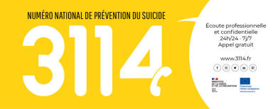 |
Déplacements et organisation de conférences
Réflexion et discussion
Situations où des difficultés peuvent apparaître
Voyages ;
Lieux de vie et de travail (manque d’accessibilité possible) ;
Sessions d’exposés (sessions parallèles, accessibilité des supports) ;
Activités organisées (visites, activités sportives ou culturelles, etc) ;
Moments conviviaux, repas, pauses cafés ;
Soins imprévus possibles ;
Traitements médicamenteux (transport et stockage sur place).
Mesures d’accessibilité et de compensation possibles
Anticipation des besoins sur place (logements adaptés, stockage des médicaments, offre de soins, séjours plus courts, etc) ;
Anticiper et organiser le voyage précocement ;
Prévoir un endroit calme (peu de stimulis sensoriels) ;
Supports accessibles des présentations avec mêmes informations données à l’oral et à l’écrit ;
Prévoir au moins une activité accessible ;
Faire preuve de bienveillance vis-à-vis du rythme et de la participation à certains événements.
Zoom sur...
Les Troubles anxieux
Les troubles anxieux se caractérisent par une peur ou des inquiétudes excessives, durables et perturbatrices par rapport à une situation donnée, ou par rapport à un large éventail de situations au quotidien.
Entre 15% et 22% de la population est concerné par un trouble anxieux.
Les symptômes comprennent, de manière non exhaustive :
Pensées agitées et/ou obsédantes ;
Nervosité, hypervigilance ;
Comportements obsessionnels ou compulsifs ;
Mise en place de stratégies d’évitement ;
Sentiment de danger imminent ou de panique, impression de ne pas avoir d’issue.
Recrutements et carrières académiques
Réflexion et discussion
Situations où des difficultés peuvent apparaître
Recrutements, procédures, auditions, mobilités peu ou pas adaptés ;
Difficulté ou incapacité à la mobilité ;
Peu ou pas de postes fléchés handicap (docs, post-docs, ATER, PRAG, MCF, CR, PR, DR, émérites) ;
Validisme bienveillant ;
Manque de sensibilisation globale à tout échelon de carrière et de hiérarchie ;
Manque d’accessibilité de certains sites web de dépôt des candidatures (CNRS, Galaxie).
Mesures d’accessibilité et de compensation possibles
Sensibilisation aux dispositifs existants et aux questions d’inclusivité pour les CoS, mais aussi pour les encadrements de thèse et les CSI ;
Evolution et harmonisation des procédures de recrutement vis-à-vis des personnes en situation de handicap ;
Repenser les modes de recrutement et permettre des cas exceptionnels de recrutement locaux ;
Création de postes fléchés handicap pour tous les stades de carrière.
Zoom sur...
Le Trouble Déficitaire de l’Attention avec ou sans Hyperactivité.
Le TDAH est caractérisé par 5 critères diagnostiques, dont 3 sont des critères symptomatiques (on parle de triade du TDAH).
Critère A : Inattention (9 sous-critères).
Critère B : Impulsivité (3 sous-critères).
Critère C : Hyperactivité (6 sous-critères).
Le TDAH peut être une comorbidité d’un autre TND.
Environ 3,5% de la population a un TDAH.
Vie du laboratoire
Réflexion et discussion
Situations où des difficultés peuvent apparaître
Fatigabilité liée à une (sur)charge mentale et de travail (tâches administratives, réunions, actions de valorisation du labo, de médiation, etc) ;
Validisme bienveillant pouvant entraîner des difficultés à prendre part à la vie du laboratoire (siéger au conseil du laboratoire, organiser des événements, prendre des responsabilités, etc) ;
Difficultés à prendre part à certains événements hors du laboratoire (déplacements) ;
Moments conviviaux (journées de rentrée, repas d’équipe, etc) ;
Gestion des rapports managériaux (possible manque de sensibilisation, de soutien, de bienveillance, incompréhensions, faible reconnaissance du travail et des efforts réalisés, rupture du lien, etc) ;
Manque de communication sur les dispositifs d’accompagnement en cas de difficultés liées à des situations de handicap.
Mesures d’accessibilité et de compensation possibles
Déterminer avec la personne la charge de travail administratif la plus adéquate ;
Anticiper d’éventuelles absences liées à l’état de santé ;
Adapter le format de certaines tâches, réunions ou événements en fonction des besoins ;
Proposer une aide humaine dans la réalisation de certaines tâches ;
Faire preuve de bienveillance sur la participation à la vie du laboratoire, aux moments conviviaux ou sur l’absentéisme (télétravail, soins, etc).
Zoom sur...
Les Troubles spécifiques des apprentissages
Les troubles spécifiques des apprentissages sont au nombre de trois (3), et se définissent par des difficultés dans l’acquisition et la maîtrise de la lecture, l’expression écrite, et des mathématiques.
Ils sont souvent nommés sous leurs anciens noms (respectivement la dyslexie, la dysorthographie et la dyscalculie).
Ils font partie des TND et environ 10% de la population a un trouble spécifique des apprentissages.
On distingue :
Les Tics et le Syndrome de Gilles de la Tourette
Les tics sont des mouvements ou des sons involontaires, brusques, stéréotypés, imprévisibles et irrésistibles (semblables à des éternuements ou des quintes de toux).
On distingue :
les tics moteurs (par exemple : clignements des paupières, froncements des sourcils, secousses de la tête, sauts, gestes dont gestes obscènes et/ou violents) ;
les tics vocaux (par exemple : se racler la gorge, tousser, renifler, cris particuliers, mots, phrases, mots obscènes et/ou violents).
On estime qu’entre 3% et 10% des enfants de 7 à 10 ans ont au moins un tic. Les tics persistent dans un quart à un tiers des cas à l’âge adulte.
Les tics sont classifiés en fonction de leur nature et de leur durée. On parle de :
tics transitoires quand il s’agit de tics moteurs et/ou vocaux qui durent moins d’une année ;
tics chroniques quand il s’agit d’un ou plusieurs tics moteurs OU d’un ou plusieurs tics vocaux qui durent plus d’une année ;
syndrome de Gilles de la Tourette (SGT) quand il s’agit d’un ou plusieurs tics moteurs et d’au moins un tic vocal qui durent plus d’une année.
Le mot de la fin
Tout ce dont on a discuté n’est pas exhaustif. N’importe quelle situation et activité peut être une situation de handicap pour quelqu’un.
Mise à disposition du support de la discussion prochainement.
Envoi d’un questionnaire dans les prochains jours pour recueillir vos retours et avis sur la discussion.
Merci pour votre participation !
Sources et liens utiles
Données générales :
Rapport 2024 de la DREES dressant un panorama du handicap en France ;
Quelques chiffres de l’Observatoire de l’emploi et du handicap pour les 20 ans de la loi du 11 février 2005 ;
Campagne de sensibilisation aux handicaps invisibles du Ministère de l’Agriculture ;
Mieux connaître les situations de handicap (Ministère de l’Agriculture) pour approfondir les liens entre troubles, déficiences et situations de handicap au travail.
Données spécifiques à l’ESR :
Numéro 443 de la VRS du SNCS-FSU dressant un panorama du handicap dans l’ESR ;
Rapport annuel 2025 d’INRIA. Des informations et des données sur la politique handicap d’INRIA sont présentes aux pages 28-29.
Dispositifs de sensibilisation :
MOOC de sensibilisation aux troubles du neurodéveloppement développé par l’Ecole des TND et disponible sur la plateforme FUN ;
Premiers secours en santé mentale (PSSM) France propose des formations, des podcasts et des carnets en accès libre pour s’informer et se sensibiliser aux troubles psychiques et aux comportements à adopter ;
Pour approfondir le sujet de la santé mentale (OMS).
Accessibilité numérique :
Référentiel général d’amélioration de l’accessibilité (RGAA) décrivant les obligations légales et critères à respecter pour produire des documents et des sites web accessibles ;
Documentation d’Opale : Opale est un outil produisant des documents textes, des diaporamas et des sites web accessibles selon plusieurs critères du RGAA.